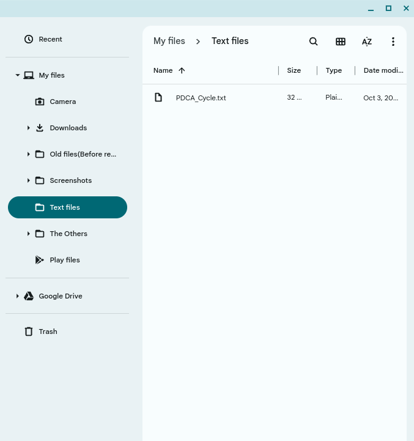
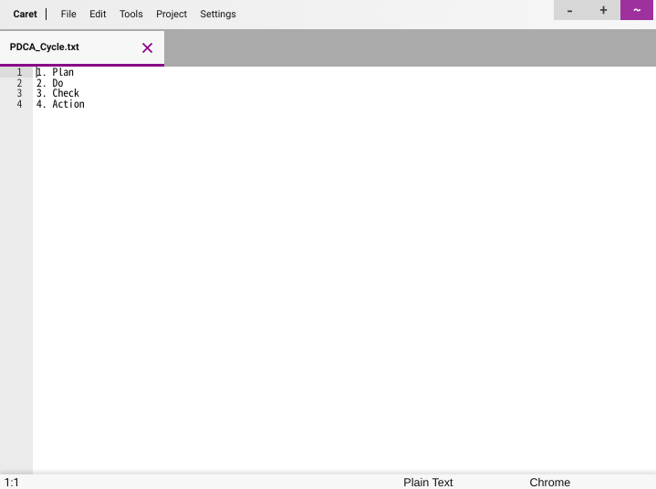
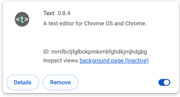
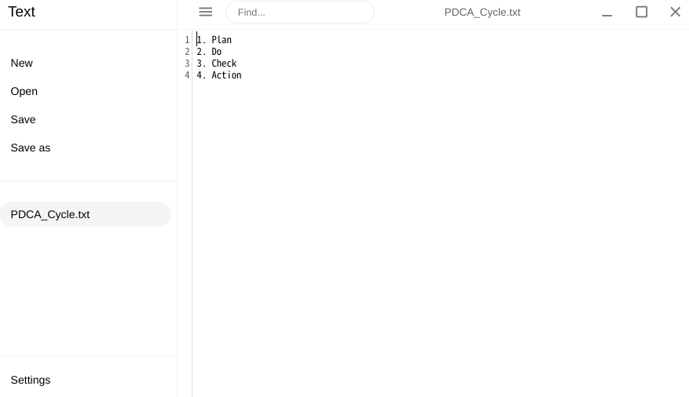

In this article, I will tell you about "Caret", one of the Chrome extensions.
Mainly for Chromebook users.
"Caret" is one of the Chrome extensions.
It has many features and can be configured according to your (programming) language and operating environment.
Now, suppose you create a text file as Notepad.
Let's assume that you have taken notes about PDCA cycle (Plan-Do-Check-Action Cycle).
This time, save the file containing this memo as "PDCA_cycle.txt" in a folder named "Text Files".
On the Files app, it was displayed like the image above.
Next, open this file in your default text editor, "Text".
*Please note: Depending on your device, "Text" may not be the default text editor [for Chromebook(s)].
What is the difference between these two text editors?
-The answer is that "Caret" has more features than "Text".
First, please watch the following video.
Did you understand the benefits of using "Caret"?
It can be autofilled to some degree depending on the (programming) language used.
It is certain that this function is at least more complete than "Text".
As mentioned earlier, "Caret" is multifunctional, but, it does not have 100% of the functionality you need.
For example, compared to Visual Studio Code for Windows and its Web version, Visual Studio Code for the Web, it clearly lacks functionality.
I believe this is unavoidable, as Caret is only one of the Chrome extensions.
However, Caret has one more serious problem.
The problem is that in some models, some or all of the files stored in the PC's internal storage disappear when the PC is rebooted. In fact, the problem occurred frequently on the Chromebook used by the author of this article.
This is an image representing the storage location mentioned earlier.
However, after rebooting the PC and looking at its storage location, it sometimes looked like the following image:
The image above shows that the file "PDCA_Cycle.txt" that was just saved has disappeared.
Let's look deeper into the internal storage to see if the files have really disappeared.
*Please note: Depending on the operating environment, you may not be able to jump to "Chrome Web Store - Caret" from this button.
In that case, please access from the link below:
Chrome Web Store - Caret Chrome Web Store - Text